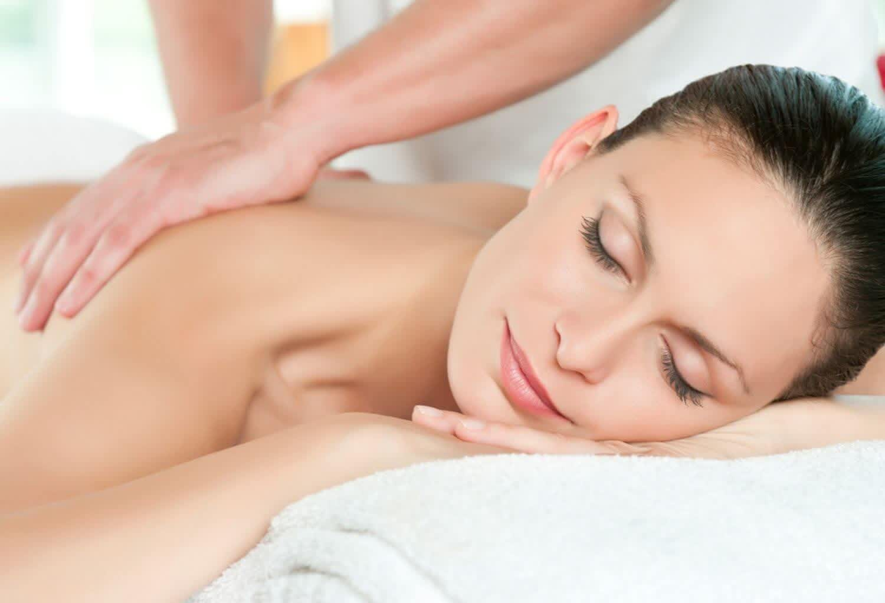
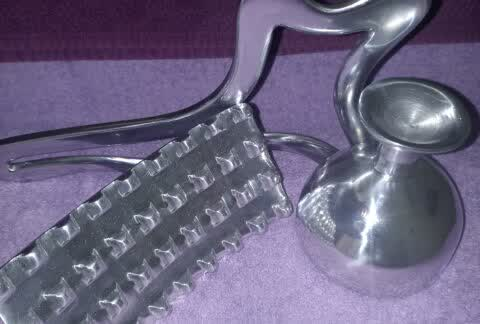
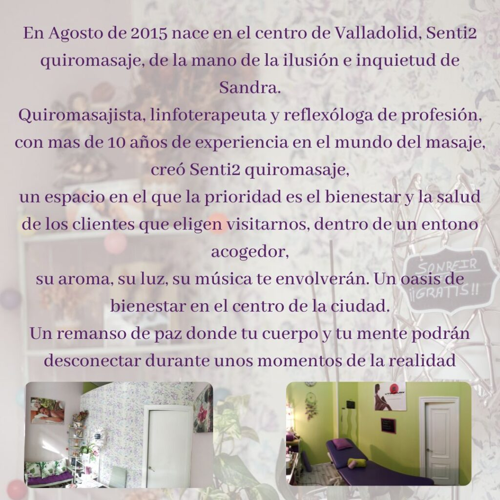

Linfodrenaje manual por el método Vodder certificado. Una técnica suave y precisa que activa el sistema linfático. Especial postoperatorios, lipedema y embarazo.

El linfodrenaje manual es una técnica de masaje suave, lento y rítmico que estimula el sistema linfático para favorecer la eliminación de líquidos y toxinas. Sandra lo practica con el método Vodder, el estándar de referencia en linfodrenaje, con formación certificada.
Sensación de ligereza, menos hinchazón y una agradable relajación. Es una técnica muy suave, nada dolorosa, indicada también para quien busca descongestionar las piernas cansadas.


No. Es una técnica muy suave y lenta. La mayoría de las personas se relajan profundamente durante la sesión.
El linfodrenaje postoperatorio es muy beneficioso, pero siempre debe contar con el visto bueno de tu médico o cirujano. Coméntanoslo al pedir cita.
Sí, con técnicas adaptadas y en embarazos sin complicaciones. Indícanos tu situación al reservar para ajustar la sesión.
En pleno centro de Valladolid. Toda sesión es con cita previa para dedicarte el tiempo que necesitas. Escríbenos por WhatsApp o llámanos.